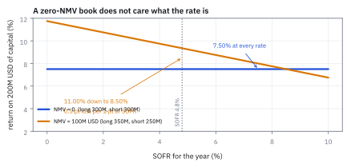
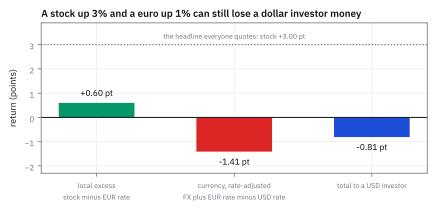

25.1 Excess Returns, Log Returns, and the Numeraire
ผลตอบแทนที่แบบจำลองทุกตัวในบทต่อไปใช้ คือผลตอบแทนที่นับปันผล หักดอกเบี้ยของเงินสดในงวดเดียวกัน วัดเป็นดอลลาร์ และรวมหลายงวดด้วยการทบต้น ไม่ใช่ด้วยการบวก
กองทุน market-neutral ทุน \$200 ล้าน ถือหุ้นฝั่ง long \$300 ล้านซึ่งปีนี้ขึ้น 11.0% และ short ตะกร้าหุ้น \$300 ล้านซึ่งขึ้น 6.0% SOFR เฉลี่ยทั้งปี 4.8% รายงานประจำปีเขียนว่ากองทุนทำได้ 12.3% ผู้ลงทุนคนหนึ่งบอกว่า “ชนะเงินฝากสองเท่าครึ่ง” ฝีมือเลือกหุ้นของกองทุนจริง ๆ คือกี่ % และถ้าปีหน้า SOFR เป็น 6.0% โดยหุ้นขยับเท่าเดิม รายงานจะเขียนว่าเท่าไร?
ลองตอบก่อนเปิดเฉลย
ฝีมือคือ 7.5% อีก 4.8 จุดคือดอกเบี้ยของเงินสด \$200 ล้านที่กองทุนถือไว้ ซึ่งผู้ลงทุนได้เองถ้าฝากเงิน ปีหน้ารายงานจะเขียน 13.5% ทั้งที่ฝีมือยังเป็น 7.5% เท่าเดิม ตัวเลขที่ใช้วัดฝีมือคือ excess return และสำหรับพอร์ตนี้มันไม่ขยับตาม SOFR เลย เพราะเงินที่ลงฝั่ง long เท่ากับฝั่ง short ถ้าพอร์ตเอียงเป็น long \$350 ล้าน short \$250 ล้าน excess return จะลดครึ่งจุดทุกครั้งที่ SOFR ขึ้นหนึ่งจุด
สิ่งที่เราจะสร้าง
หน้าก่อน ๆ ใช้คำว่าผลตอบแทนเหมือนเป็นตัวเลขที่ตกลงกันแล้ว บทที่ 26 และ 27 จะเอาผลตอบแทนของหุ้นหลายพันตัวเข้า factor model และ covariance matrix จึงต้องตกลงให้ชัดก่อนว่าผลตอบแทนหนึ่งตัวนับอะไร หักอะไรออก วัดเป็นเงินสกุลไหน และรวมหลายงวดอย่างไร
ลำดับคือ ผลตอบแทนที่นับปันผล สร้าง PnL ของพอร์ตจากจำนวนหุ้นแล้วแยกดอกเบี้ยของเงินสดออกจนได้ excess return ดูว่า NMV คุมการรั่วของดอกเบี้ยอย่างไร นับวันของดอกเบี้ยรายวันให้ถูก ทบต้นหลายงวดด้วย log return ที่ 1.10 สร้างไว้ วัดช่องว่าง $\sigma^2/2$ แล้วปิดที่หุ้นต่างสกุลเงิน
ศัพท์ที่ใช้ในหัวข้อนี้
- Excess return
- ผลตอบแทนลบดอกเบี้ยของเงินสดในงวดเดียวกัน บอกว่าการลงทุนนี้ให้มากกว่าการถือเงินสดเฉย ๆ เท่าไร แบบจำลองตั้งแต่บทที่ 26 ใช้ตัวนี้ทั้งหมด
- Net Market Value (NMV)
- มูลค่าฝั่ง long ลบมูลค่าฝั่ง short บอกว่าพอร์ตใช้เงินสดสุทธิไปเท่าไร และเป็นตัวคูณที่ทำให้ระดับดอกเบี้ยรั่วเข้า excess return ของพอร์ต
- SOFR และ Actual/360
- Secured Overnight Financing Rate คืออัตราดอกเบี้ยข้ามคืนมีหลักประกันของตลาดดอลลาร์ ใช้แทนดอกเบี้ยของเงินสด ดอกเบี้ยคิดตามจำนวนวันปฏิทินจริงหารด้วย 360
- Log return
- $\ln(1+r)$ บวกกันข้ามงวดได้ตรง ๆ เพราะเป็น log ของผลคูณ (1.10) ใช้ทุกครั้งที่ต้องรวมหลายงวด
- Volatility drag
- ช่องว่างราว $\sigma^2/2$ ต่องวด ระหว่างค่าเฉลี่ยของผลตอบแทนธรรมดากับค่าเฉลี่ยของ log return ทำให้พอร์ตที่ขึ้นลงแรงโตช้ากว่าค่าเฉลี่ยที่รายงาน
- Numeraire
- หน่วยเงินที่ใช้วัดทุกอย่าง เล่มนี้ใช้ดอลลาร์ หุ้นในสกุลอื่นต้องแปลงผลตอบแทนเป็นดอลลาร์ก่อนเข้าแบบจำลอง
สัญลักษณ์และหน่วย
| สัญลักษณ์ | ความหมาย | หน่วย |
|---|---|---|
| $P_i(t),\ D_i(t)$ | ราคาปิดของหุ้น $i$ วัน $t$ และปันผลต่อหุ้นที่จ่ายในงวดนั้น | \$ ต่อหุ้น |
| $r_i,\ r_f$ | ผลตอบแทนของหุ้น $i$ และดอกเบี้ยของเงินสดในงวดเดียวกัน | ทศนิยมต่องวด |
| $w_i$ | เงินที่ลงในหุ้น $i$ ติดลบเมื่อ short | \$ |
| $A,\ \mathrm{NMV}$ | ทุนของกองทุน และ $\sum_i w_i$ | \$ |
| $\tilde r$ | log return $\ln(1+r)$ | ต่องวด |
| $\mu,\ \sigma$ | ค่าเฉลี่ยและความผันผวนของผลตอบแทนต่องวด | ทศนิยมต่องวด |
| $r_\ell,\ g$ | ผลตอบแทนของหุ้นในสกุลท้องถิ่น และผลตอบแทนของเงินท้องถิ่นเทียบดอลลาร์ | ทศนิยม |
ขั้นที่ 1 — ผลตอบแทนหนึ่งวันที่นับปันผล
ผลตอบแทนคือเงินที่ได้เพิ่มต่อเงินหนึ่งดอลลาร์ที่ลงไป นี่คือนิยาม ถ้าถือหุ้นข้ามวัน ex-dividend ราคาจะลดลงราวเท่าปันผล เพราะเงินก้อนนั้นย้ายจากบริษัทมาเข้าบัญชีเรา สูตรจึงต้องนับทั้งราคาและปันผล ตัวอย่างสมมติ: วันอังคาร ราคาปิดจาก \$50.00 เป็น \$50.60 และได้ปันผล \$0.25 ต่อหุ้น
บรรทัดแรกเขียนนิยามในรูป “มูลค่าตอนจบหารด้วยเงินที่ลงไป ลบหนึ่ง” ซึ่งเท่ากับ $(P_i(t)+D_i(t)-P_i(t-1))/P_i(t-1)$ ลืมปันผลวันเดียวหายไปครึ่งจุด และถ้าหุ้นจ่าย \$0.25 ทุกไตรมาส ทั้งปีจะหายไป $4(0.25)/50=2\%$
หุ้นปันผลสูงจะดูแย่กว่าหุ้นที่ไม่จ่ายปันผล ทั้งที่ผู้ถือได้เงินเท่ากัน ฐานข้อมูลราคาส่วนใหญ่มีทั้งราคาดิบและราคาที่ปรับปันผลแล้ว ต้องรู้ว่ากำลังใช้แบบไหน
ขั้นที่ 2 — PnL ของพอร์ต และเงินสดที่เหลือ
ต่อจากหุ้นหนึ่งตัวเป็นทั้งพอร์ต พอร์ตลง $w_i$ ดอลลาร์ในหุ้น $i$ จึงได้หุ้น $w_i/P_i(0)$ หุ้น ติดลบเมื่อ short เงินสดที่เหลือจากทุนคือ $A-\sum_i w_i$ ได้ดอกเบี้ย $r_f$ และถ้าติดลบคือยืมมาและจ่าย $r_f$ หน้านี้สมมติว่ายืมและฝากที่อัตราเดียวกัน แล้วหักสิ่งที่ทุนจะได้ถ้าฝากเงินเฉย ๆ คือ $Ar_f$
สามบรรทัดแรกคือจำนวนหุ้น $n_i$ คูณมูลค่าตอนจบ ลบเงินที่ลงไป $n_iP_i(0)=w_i$ ดึง $n_iP_i(0)$ ออกเป็นตัวร่วมแล้วใช้นิยามของขั้นที่ 1 ได้ $w_ir_i$ ทันที ใช้ได้กับ short ด้วยเพราะ $w_i$ ติดลบ คนที่ short ต้องจ่ายทั้งราคาที่ขึ้นและปันผลคืนให้ผู้ให้ยืมหุ้น
บรรทัดสุดท้ายคือหัวใจ: เมื่อหัก $Ar_f$ ออก ก้อน $Ar_f$ ในวงเล็บหายไป ผลตอบแทนของทุกหุ้นกลายเป็นผลตอบแทนลบ $r_f$ เอง ตัวคูณของ $r_f$ ที่ซ่อนอยู่คือ $\sum_iw_i$ ซึ่งคือ NMV
ขั้นที่ 3 — โจทย์เปิดหน้า: 12.3% ในรายงาน ฝีมือ 7.5%
โจทย์ให้อะไรมาบ้าง: ทุน $A=\$200$ ล้าน ฝั่ง long $w=+300$ ได้ 11.0% ฝั่ง short $w=-300$ ได้ 6.0% SOFR 4.8% หน่วยเป็นล้านดอลลาร์ ใช้สูตรของขั้นที่ 2
คำตอบ: รายงานเขียน 12.3% ซึ่งคือผลตอบแทนรวมบนทุน ในนั้นมี 4.8 จุดที่มาจากดอกเบี้ยของเงินสด \$200 ล้าน excess return คือ 7.5% ถ้าปีหน้า SOFR เป็น 6.0% ผลตอบแทนรวมเป็น $(15.0+200(0.06))/200=13.5\%$ แต่ excess return ยัง $15.0/200=7.5\%$ เพราะ NMV เป็นศูนย์ ตัวคูณของ $r_f$ จึงเป็นศูนย์
ตรวจเองใน 10 วินาที: ฝั่ง long ชนะฝั่ง short 5 จุดบนขนาด \$300 ล้าน ได้ \$15 ล้าน หารทุน \$200 ล้านได้ 7.5% และ $12.3\%-4.8\%=7.5\%$
ขั้นที่ 4 — พอร์ตที่เอียง: ดอกเบี้ยรั่วเข้าครึ่งจุดต่อจุด
ถ้าพอร์ตไม่ neutral ระดับดอกเบี้ยจะรั่วเข้า excess return ขนาดของการรั่วอ่านได้จากขั้นที่ 2 เลย หารทั้งสองข้างด้วยทุนแล้วดูว่า excess return เปลี่ยนเท่าไรเมื่อ $r_f$ ขึ้นหนึ่งหน่วย ตัวอย่าง: long \$350 ล้าน short \$250 ล้าน ขนาดรวมยัง \$600 ล้านเท่าเดิม ผลตอบแทนของสองฝั่งเท่าเดิม
excess return ของพอร์ตนี้เป็นเส้นตรงใน $r_f$ ที่ความชัน $-\mathrm{NMV}/A=-0.5$ ทุกหนึ่งจุดของ SOFR กิน excess return ครึ่งจุด เพราะพอร์ตใช้เงินสดสุทธิ \$100 ล้านที่ควรได้ดอกเบี้ย ถ้า SOFR เป็นศูนย์ excess return คือ 11.75% ที่ 4.8% เหลือ 9.35% และที่ 10% เหลือ 6.75%
ผลตอบแทนรวมบนทุนของพอร์ตนี้คือ $(23.5+100(0.048))/200=14.15\%$ ซึ่งเท่ากับ $9.35\%+4.8\%$ พอดี ความเอียงของพอร์ตไม่ได้เป็นแค่ความเสี่ยงตลาด แต่เป็นการเดิมพันกับระดับดอกเบี้ยด้วย
Figure 25.1a — พอร์ตที่ NMV เป็นศูนย์ไม่สนระดับดอกเบี้ย

ขั้นที่ 5 — ดอกเบี้ยรายวัน: นับวันปฏิทิน ไม่ใช่วันทำการ
แบบจำลองรายวันต้องหัก $r_f$ ของวันเดียวกัน SOFR คิดดอกเบี้ยตามจำนวนคืนที่เงินค้างหารด้วย 360 ผลตอบแทนวันอังคาร (ปิดจันทร์ถึงปิดอังคาร) ครอบคลุมหนึ่งคืน แต่ผลตอบแทนวันจันทร์ (ปิดศุกร์ถึงปิดจันทร์) ครอบคลุมสามคืน
ทั้งปีต้องได้ 365 คืนเสมอไม่ว่าจะมีวันหยุดกี่วัน เพราะวันหยุดแค่ย้ายคืนไปรวมกับวันทำการถัดไป คนที่ใช้ $0.048/360$ กับทุกวันทำการ 252 วัน (1.1) จะหักดอกเบี้ยทั้งปีแค่ 3.360% ขาดไป 1.507 จุด หรือ 31% ของดอกเบี้ยจริง
excess return ของวันอังคารในขั้นที่ 1 คือ $1.700\%-0.01333\%=1.68667\%$ ตัวเลขรายวันดูเล็กจนน่าทิ้ง แต่รวมทั้งปีคือ 4.867 จุด มากกว่า excess return ทั้งปีของกลยุทธ์จำนวนมาก
ขั้นที่ 6 — ทบต้นหลายงวด และ log return ที่บวกกันได้
ผลตอบแทนหลายงวดไม่ใช่ผลบวกของผลตอบแทนรายงวด เงิน \$1 ที่ผ่าน $T$ งวดกลายเป็นผลคูณของ $1+r(t)$ นี่คือนิยามของผลตอบแทนทบต้น 1.10 แสดงแล้วว่า log เปลี่ยนผลคูณเป็นผลบวก ขั้นนี้ใช้มันกับเส้นทางที่สั้นที่สุดที่เห็นปัญหา: ขึ้น 50% แล้วลง 50%
ผลรวมของ log คือ log ของผลคูณพอดี จึงไม่มีการประมาณเลย แต่ต้องถอด exponential ก่อนอ่านเป็นเงิน: $-0.2877$ ไม่ได้แปลว่าขาดทุน 28.77%
ผลรวมของผลตอบแทนธรรมดาผิดไป 25 จุด และผิดในทางมองโลกสวยเสมอ เพราะ $\ln(1+r)\le r$ ทุกค่า $r$: เส้นโค้งของ log อยู่ใต้เส้นสัมผัส $y=r$ ที่จุด $r=0$ ผลรวมของ $r$ จึงไม่เคยต่ำกว่าผลรวมของ log
Figure 25.1b — ขึ้น 50% แล้วลง 50%: ผลรวมของผลตอบแทนธรรมดาหลอกตา

ขั้นที่ 7 — ช่องว่างมีขนาดราว σ²/2 ต่องวด
ถ้าผลตอบแทนเล็ก ช่องว่าง $r-\ln(1+r)$ เล็กมากในแต่ละงวด แต่มันสะสมทุกงวดและไม่เคยติดลบ อยากรู้ขนาดโดยเฉลี่ย จึงกระจาย log รอบศูนย์ด้วย Taylor แล้วหาค่าเฉลี่ย โดยใช้ $\mathbb E[r^2]=\sigma^2+\mu^2$
บรรทัดที่สามทิ้ง $\mu^2/2$ เพราะค่าเฉลี่ยรายวันราว 0.03% เล็กกว่าความผันผวนรายวัน 1% มาก และทิ้งพจน์กำลังสามขึ้นไปซึ่งเล็กกว่านั้นอีก ช่องว่างรายวัน $0.5(0.0001)=0.005\%$ ดูไม่มีอะไร แต่รวม 252 วันได้ 1.26 จุดต่อปี เท่ากับ $\tfrac12\sigma_{\rm yr}^2$ เพราะ variance บวกกันตามจำนวนวัน
ที่ความผันผวน 30% ต่อปี ช่องว่างเป็น $0.5(0.09)=4.5$ จุด และที่ 60% เป็น 18 จุด ช่องว่างโตตามกำลังสองของความผันผวน นี่คือเรื่องเดียวกับเส้นทางกลางของ GBM ที่โตที่ $\mu-\sigma^2/2$ ใน 10.2
Figure 25.1c — ช่องว่างโตตามกำลังสองของความผันผวน

ขั้นที่ 8 — ค่าเฉลี่ยเรขาคณิตไม่เคยเกินค่าเฉลี่ยเลขคณิต
รายงานผลงานมักโชว์ค่าเฉลี่ยของผลตอบแทนรายปี $\bar r$ แต่เงินของผู้ลงทุนโตตามค่าเฉลี่ยเรขาคณิต $G=\big[\prod_t(1+r_t)\big]^{1/T}-1$ สองตัวนี้เรียงกันเสมอ พิสูจน์ด้วยเส้นสัมผัส: $\ln x$ โค้งลง จึงอยู่ใต้เส้นสัมผัสที่จุด $m$ ทุกจุด ตั้ง $x_t=1+r_t$ และให้ $m$ เป็นค่าเฉลี่ยของ $x_t$ ซึ่งคือ $1+\bar r$
บรรทัดที่สองได้จากการหาค่าเฉลี่ยทั้งสองข้าง ก้อน $(x_t-m)/m$ เฉลี่ยแล้วเป็นศูนย์พอดีเพราะ $m$ คือค่าเฉลี่ยของ $x_t$ เอง แล้วยกทั้งสองข้างขึ้นเป็นกำลังของ $e$ ได้บรรทัดที่สาม สองตัวเท่ากันเฉพาะเมื่อทุกงวดได้ผลตอบแทนเท่ากัน
เส้นทาง ±50% มีค่าเฉลี่ยเลขคณิต 0% แต่ค่าเฉลี่ยเรขาคณิต −13.40% ต่องวด ซึ่งคือสิ่งที่เงินได้จริง: $0.8660^2=0.75$ ช่องว่างระหว่างสองตัวคือ volatility drag ของขั้นที่ 7 ในอีกรูปหนึ่ง
ขั้นที่ 9 — หุ้นต่างสกุลเงิน: numeraire คือดอลลาร์
นักลงทุนดอลลาร์ซื้อหุ้นยุโรปด้วยการแลกดอลลาร์เป็นยูโร สิ่งที่เขาได้ต้องวัดเป็นดอลลาร์ เพราะดอลลาร์คือ numeraire ตัวอย่างสมมติ ทุกตัวเป็นของช่วงเดียวกัน: หุ้นขึ้น $r_\ell=3.0\%$ ในสกุลยูโร EURUSD จาก 1.0900 เป็น 1.1008 ดอกเบี้ยยูโร 2.4% ดอกเบี้ยดอลลาร์ 4.8%
ผลลัพธ์นี้แยกเป็นก้อนที่ตั้งชื่อได้ กางวงเล็บของ $r_\$$ แล้วบวกลบ $r_f^{\rm EUR}$ เข้าไปหนึ่งครั้ง จะได้สามก้อนที่รวมกันเท่า $r_\$-r_f^{\$}$ พอดี
ก้อนแรกคือ excess return ของหุ้นในบ้านของมันเอง ก้อนที่สองคือ excess return ของการถือเงินยูโรแทนดอลลาร์ ซึ่งได้ทั้งค่าเงินที่แข็งขึ้นและดอกเบี้ยยูโร แต่เสียดอกเบี้ยดอลลาร์ ก้อนที่สามคือกำไรของหุ้นที่ได้ค่าเงินด้วย
หุ้นขึ้น 3% และยูโรแข็ง 1% แต่นักลงทุนดอลลาร์แพ้เงินฝากดอลลาร์ 0.78 จุด เพราะดอกเบี้ยดอลลาร์สูงกว่า 2.4 จุด
log return ไม่มีก้อนไขว้: $\ln1.03+\ln1.009908=0.029559+0.009859=0.039418$ ซึ่งคือ $\ln1.040206$ พอดี นี่เป็นอีกเหตุผลที่งานข้ามสกุลเงินชอบ log return
Figure 25.1d — ผลตอบแทนดอลลาร์ของหุ้นยุโรป แยกเป็นก้อน

คำถามที่ควรถามออกมาดัง ๆ
ถ้า log return ดีขนาดนี้ ทำไมไม่ใช้มันทุกที่? เพราะมันบวกกันข้ามเวลาได้ แต่บวกกันข้ามหุ้นไม่ได้ ผลตอบแทนของพอร์ตคือ $\sum_iw_ir_i/A$ ซึ่งเป็นเส้นตรงในผลตอบแทนธรรมดา ไม่ใช่ใน log ถ้าผลตอบแทนธรรมดาของทุกหุ้นเป็น Normal ร่วมกัน PnL ของพอร์ตก็เป็น Normal และคิด variance ได้จาก covariance matrix ตัวเดียว งานข้ามหุ้นจึงใช้ผลตอบแทนธรรมดา งานข้ามเวลาใช้ log
ทำไมใช้ดอกเบี้ยข้ามคืน ไม่ใช้พันธบัตร 10 ปี? เพราะ $r_f$ ต้องเป็นดอกเบี้ยของงวดเดียวกับผลตอบแทน เงินสดหนึ่งวันได้ดอกเบี้ยหนึ่งวัน พันธบัตร 10 ปีมีราคาขึ้นลงของตัวเอง จึงไม่ใช่เงินสดที่แทบไม่มีความเสี่ยง
ความผิดที่ให้คำตอบผิดโดยไม่มีอะไรเตือน
รายงานผลตอบแทนรวมเป็นฝีมือ: กองทุนในโจทย์ได้ 12.3% ในปีที่ SOFR 4.8% และ 13.5% ในปีที่ 6.0% ทั้งที่ฝีมือเท่ากันที่ 7.5% การเทียบผลงานข้ามปีด้วยผลตอบแทนรวมคือการเทียบระดับดอกเบี้ยของแต่ละปี
ใช้ $r_f/360$ กับทุกวันทำการ: ดอกเบี้ยทั้งปีเหลือ 3.360% แทน 4.867% excess return ของทุกหุ้นสูงไป 1.5 จุดต่อปีทั้งที่ไม่มีใครทำอะไร
ป้อนผลตอบแทนดิบเข้า factor model: ผลตอบแทนดิบของทุกหุ้นมีดอกเบี้ยของวันนั้นอยู่ด้วย เฉลี่ยวันละ $4.867\%/252=0.0193\%$ factor ที่มี loading เท่ากับ 1 ทุกหุ้น เช่น market factor จะดูดก้อนนี้ไปทั้งหมด และรายงานว่าตลาดให้ผลตอบแทนเกินจริงราว 4.87 จุดต่อปี พอร์ตที่เอียง long จะดูเหมือนมีฝีมือจับจังหวะตลาด ทั้งที่เป็นแค่ดอกเบี้ย
ทิ้งก้อนไขว้ของค่าเงินในเดือนที่ขยับแรง: ในขั้นที่ 9 ก้อนไขว้แค่ 0.03 จุด แต่ถ้าหุ้นขึ้น 30% และเงินท้องถิ่นแข็ง 20% ก้อนไขว้คือ $0.30\times0.20=6$ จุด การแยกแบบเส้นตรงจะหายไปทั้ง 6 จุด
ใช้ทำอะไรบนโต๊ะจริง
ข้อมูลที่ป้อน factor model ใน 26.1 คือ excess return รายวันที่นับปันผลและวัดเป็นดอลลาร์ ทีมข้อมูลเก็บสามตัวเลขแยกกันเสมอ: ผลตอบแทนราคาพร้อมปันผล ดอกเบี้ยของวันตามจำนวนคืน และค่ายืมหุ้นของฝั่ง short ผลรวมของสองตัวหลังเรียกว่า carry และรายงานแยกจากฝีมือเลือกหุ้น
ทีมความเสี่ยงดู NMV ทุกวันเพราะมันคือความไวของ excess return ต่อระดับดอกเบี้ย และพอร์ตหลายสกุลเงินต้องตัดสินใจว่าจะ hedge ก้อนที่สองของขั้นที่ 9 หรือถือไว้เป็นการเดิมพันค่าเงิน
สามโจทย์ตรวจความเข้าใจ
1. หุ้นปิดเมื่อวาน \$80.00 วันนี้เป็นวัน ex-dividend ปิดที่ \$79.20 และจ่ายปันผล \$1.20 ต่อหุ้น ผลตอบแทนของวันนี้คือเท่าไร และถ้าลืมปันผลจะได้เท่าไร?
เฉลย
$(79.20+1.20)/80.00-1=80.40/80.00-1=0.50\%$ ถ้าลืมปันผลได้ $79.20/80.00-1=-1.00\%$ วันที่ผู้ถือได้กำไรครึ่งจุดจะถูกบันทึกเป็นวันขาดทุนหนึ่งจุด
2. ทุน \$200 ล้าน long \$400 ล้านที่ขึ้น 8% และ short \$200 ล้านของตะกร้าที่ขึ้น 5% SOFR 5% ผลตอบแทนรวมบนทุนและ excess return คือเท่าไร?
เฉลย
$\sum_iw_ir_i=400(0.08)-200(0.05)=32-10=22$ NMV $=200$ เงินสดเหลือ $200-200=0$ จึงไม่มีดอกเบี้ยรับ ผลตอบแทนรวม $22/200=11\%$ excess return $=(22-200(0.05))/200=12/200=6\%$ ตรวจด้วย $\sum_iw_i(r_i-r_f)=400(0.03)-200(0)=12$ ตรงกัน
3. กองทุนได้ +20%, −10% และ +5% ในสามปี ผลตอบแทนทบต้นสามปี ค่าเฉลี่ยเลขคณิต และค่าเฉลี่ยเรขาคณิตคือเท่าไร?
เฉลย
ผลคูณ $1.2\times0.9\times1.05=1.134$ ทบต้นสามปีได้ 13.4% ค่าเฉลี่ยเลขคณิต $(20-10+5)/3=5.00\%$ ค่าเฉลี่ยเรขาคณิต $1.134^{1/3}-1=4.2808\%$ ต่ำกว่าตามขั้นที่ 8 ตรวจด้วย log: $\ln1.2+\ln0.9+\ln1.05=0.125751$ และ $e^{0.125751}=1.134$
คำนวณซ้ำด้วย JavaScript
รันใน Node.js ได้โดยไม่ติดตั้งแพ็กเกจ โค้ดคิด PnL ของพอร์ตจากตำแหน่งเป็นดอลลาร์พร้อมบัญชีเงินสด ยืนยันว่า excess return ของพอร์ต NMV ศูนย์ไม่ขยับตามดอกเบี้ย คิดดอกเบี้ยตามจำนวนคืน ทบต้นและบวก log ของเส้นทาง ±50% คิดช่องว่าง $\sigma^2/2$ และแยกผลตอบแทนดอลลาร์ของหุ้นยุโรปเป็นสามก้อน แล้วพิมพ์ตัวเลขหลักหนึ่งบรรทัด
const {log, exp, sqrt} = Math;
function finite(name, v) {
if (typeof v !== 'number' || !Number.isFinite(v)) throw new TypeError(`${name} must be a finite number`);
return v;
}
function positive(name, v) {
if (!(finite(name, v) > 0)) throw new RangeError(`${name} must be positive`);
return v;
}
function returnList(returns) {
if (!Array.isArray(returns) || returns.length === 0) throw new TypeError('returns must be a non-empty array');
returns.forEach(r => { if (finite('return', r) <= -1) throw new RangeError('a return of -100% or worse cannot be compounded'); });
return returns;
}
// Step 1: (price at the end + dividend paid) / price at the start - 1.
function simpleReturn(p0, p1, dividend = 0) {
positive('p0', p0); positive('p1', p1);
if (finite('dividend', dividend) < 0) throw new RangeError('dividend cannot be negative');
return (p1 + dividend) / p0 - 1;
}
// Step 2: dollar positions {value, ret} (value < 0 is a short) and cash = capital - NMV earning rf.
function bookReturns(capital, positions, rf) {
positive('capital', capital); finite('rf', rf);
if (!Array.isArray(positions) || positions.length === 0) throw new TypeError('positions must be a non-empty array');
let nmv = 0, raw = 0;
for (const {value, ret} of positions) {
finite('value', value);
if (finite('ret', ret) <= -1) throw new RangeError('a position cannot lose more than 100%');
nmv += value; raw += value * ret;
}
const total = raw + (capital - nmv) * rf, excess = total - capital * rf;
return {nmv, raw, total, excess, totalPct: total / capital, excessPct: excess / capital};
}
// Step 5: Actual/360 interest for a whole number of calendar nights.
function accrual(rate, nights, basis = 360) {
finite('rate', rate); positive('basis', basis);
if (!Number.isInteger(nights) || nights < 0) throw new RangeError('nights must be a whole number of calendar days');
return rate * nights / basis;
}
// Steps 6 and 8: compounding, the sum of logs and the geometric mean of a return path.
const compound = returns => returnList(returns).reduce((w, r) => w * (1 + r), 1) - 1;
const logSum = returns => returnList(returns).reduce((s, r) => s + log(1 + r), 0);
const arithmeticMean = returns => returnList(returns).reduce((s, r) => s + r, 0) / returns.length;
const geometricMean = returns => exp(logSum(returns) / returns.length) - 1;
// Step 9: dollar return of a local stock, split into local excess, currency excess and the cross term.
function usdReturn({local, fxStart, fxEnd, rateLocal, rateUsd}) {
finite('local', local); positive('fxStart', fxStart); positive('fxEnd', fxEnd); finite('rateLocal', rateLocal); finite('rateUsd', rateUsd);
if (local <= -1) throw new RangeError('local return must be above -100%');
const g = fxEnd / fxStart - 1, usd = (1 + local) * (1 + g) - 1;
const parts = {localExcess: local - rateLocal, currencyExcess: g + rateLocal - rateUsd, cross: local * g};
return {g, usd, excess: usd - rateUsd, ...parts, partsSum: parts.localExcess + parts.currencyExcess + parts.cross,
linearOnly: parts.localExcess + parts.currencyExcess, logs: log(1 + local) + log(1 + g)};
}
const neutral = [{value: 300, ret: 0.11}, {value: -300, ret: 0.06}];
const tilted = [{value: 350, ret: 0.11}, {value: -250, ret: 0.06}];
const n48 = bookReturns(200, neutral, 0.048), n60 = bookReturns(200, neutral, 0.060);
const t0 = bookReturns(200, tilted, 0), t48 = bookReturns(200, tilted, 0.048), t10 = bookReturns(200, tilted, 0.10);
const day = simpleReturn(50.00, 50.60, 0.25), path = [0.5, -0.5];
const fx = usdReturn({local: 0.03, fxStart: 1.09, fxEnd: 1.1008, rateLocal: 0.024, rateUsd: 0.048});
console.log(JSON.stringify({
dividend: {withDividend: day, withoutDividend: simpleReturn(50.00, 50.60), yearlyMissed: 4 * 0.25 / 50},
neutral: {at48: n48, at60: n60, excessAtZero: bookReturns(200, neutral, 0).excessPct, excessAt10: bookReturns(200, neutral, 0.10).excessPct},
tilted: {at0: t0.excessPct, at48: t48.excessPct, at10: t10.excessPct, total48: t48.totalPct, slope: (t10.excessPct - t0.excessPct) / 0.10},
dayCount: {tuesday: accrual(0.048, 1), monday: accrual(0.048, 3), year: accrual(0.048, 365), wrong: 252 * accrual(0.048, 1),
excessTuesday: day - accrual(0.048, 1), perTradingDay: accrual(0.048, 365) / 252},
path: {compound: compound(path), simpleSum: path[0] + path[1], logSum: logSum(path), back: exp(logSum(path)) - 1,
arithmetic: arithmeticMean(path), geometric: geometricMean(path)},
drag: {daily: 0.5 * 0.01 ** 2, year: 252 * 0.5 * 0.01 ** 2, annualSigma: 0.01 * sqrt(252), at30: 0.5 * 0.3 ** 2, at60: 0.5 * 0.6 ** 2,
figureExpectedAt80: 251 * (exp(0.8 ** 2 / 502) - 1)},
fx,
crossBigMonth: 0.30 * 0.20,
exercises: {dividendDay: simpleReturn(80, 79.2, 1.2), forgot: simpleReturn(80, 79.2),
book: bookReturns(200, [{value: 400, ret: 0.08}, {value: -200, ret: 0.05}], 0.05),
threeYears: {compound: compound([0.2, -0.1, 0.05]), arithmetic: arithmeticMean([0.2, -0.1, 0.05]),
geometric: geometricMean([0.2, -0.1, 0.05]), logSum: logSum([0.2, -0.1, 0.05])}}
}));ข้อจำกัด: วิธีนี้สมมติอะไร และของจริงเป็นอย่างไร
| เรื่อง | วิธีนี้สมมติว่า | ของจริง | ผลเวลาใช้งาน |
|---|---|---|---|
| ยืมกับฝาก | ดอกเบี้ยเท่ากันทั้งสองทาง | ยืมที่ SOFR บวกส่วนต่าง เงินจากการ short ได้ SOFR ลบค่ายืมหุ้น | พอร์ตที่ขนาดรวมใหญ่เสียส่วนต่างสองทาง ต้องนับเข้า carry |
| ค่ายืมหุ้นฝั่ง short | ไม่มี | หุ้นที่หายากเสียค่ายืมหลายจุดต่อปี (24.3) | กลยุทธ์ที่ short หุ้นเล็กอาจกำไรบนกระดาษแต่ขาดทุนจริง |
| ปันผล | ได้เต็มจำนวน | มีภาษีหัก ณ ที่จ่ายตามประเทศของผู้ถือ | ผลตอบแทนหลังภาษีต่ำกว่าที่ backtest บอก |
| $\ln(1+r)\approx r$ | ใช้แทนกันได้ | แม่นสำหรับรายวันที่ผลตอบแทนเล็ก เพี้ยนสำหรับรายปีหรือหุ้นที่ขยับแรง | ผลตอบแทนหลายงวดต้องทบต้นจริง ไม่ใช่บวก |
สิ่งที่ควรตอบได้หลังอ่าน
- ผลตอบแทนหนึ่งงวดคือ $(P_i(t)+D_i(t))/P_i(t-1)-1$ ลืมปันผล \$0.25 บนหุ้น \$50 หายไปครึ่งจุด และ 2% ต่อปีถ้าจ่ายทุกไตรมาส
- หักดอกเบี้ยที่ทุนได้อยู่แล้วออกจาก PnL จะได้ $\sum_iw_i(r_i-r_f)$ กองทุนในโจทย์รายงาน 12.3% แต่ excess return คือ 7.5%
- excess return ของพอร์ตไวต่อดอกเบี้ยด้วยความชัน $-\mathrm{NMV}/A$: ศูนย์เมื่อ NMV เป็นศูนย์ และ −0.5 เมื่อ long \$350 ล้าน short \$250 ล้านบนทุน \$200 ล้าน
- ดอกเบี้ยรายวันคิดตามจำนวนคืน วันจันทร์มีสามคืน ทั้งปีได้ $4.8\%\times365/360=4.867\%$ ไม่ใช่ 3.360%
- ผลรวมของ log คือ log ของผลคูณพอดี ผลรวมของผลตอบแทนธรรมดาสูงเกินไปราว $\sigma^2/2$ ต่องวด: 1.26 จุดต่อปีที่ความผันผวน 15.87% และค่าเฉลี่ยเรขาคณิตไม่เคยเกินค่าเฉลี่ยเลขคณิต
- หุ้นต่างสกุลให้ excess return ดอลลาร์เท่ากับ excess return ท้องถิ่น บวก excess return ของค่าเงิน บวกก้อนไขว้ หุ้น +3% กับยูโร +1% ยังแพ้เงินฝากดอลลาร์ 0.78 จุด
25.2 เอา excess return รายวันแบบนี้มาดูว่ามีนิสัยอะไรที่ทุกตลาดมีเหมือนกัน: หางหนากว่า Normal ทิศไม่มีความจำแต่ขนาดมี และความหนาของหางขึ้นกับว่าวัดรายวันหรือรายเดือน